UNASSIGNED = 0
VOID = 1
SOLID = 2
PIXEL_IMPOSSIBLE = 3
PIXEL_EXISTING = 4
PIXEL_POSSIBLE = 5
PIXEL_REQUIRED = 6
TOUCH_REQUIRED = 7
TOUCH_INVALID = 8
TOUCH_EXISTING = 9
TOUCH_VALID = 10
TOUCH_FREE = 11
TOUCH_RESOLVING = 12Design
All design-related functions
Design
Design (void_pixels:jax.Array, solid_pixels:jax.Array, void_touches:jax.Array, solid_touches:jax.Array)
new_design
new_design (shape)
design_mask
design_mask (design, dtype=<class 'float'>)
visualize
visualize (design, grid=True)
my_brush = notched_square_brush(5, 1)
show_mask(my_brush)No GPU/TPU found, falling back to CPU. (Set TF_CPP_MIN_LOG_LEVEL=0 and rerun for more info.)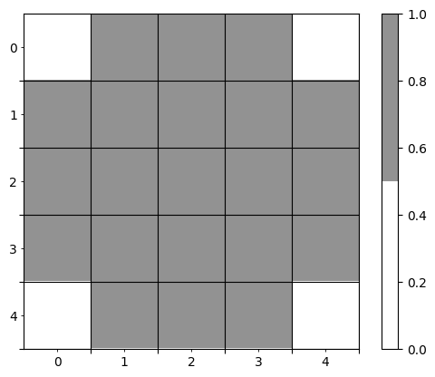
step1 = lambda: new_design((6, 8))
step1()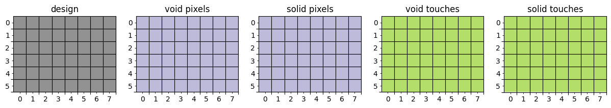
add_void_touch
add_void_touch (design, brush, pos)
step2 = lambda: add_void_touch(step1(), my_brush, (0, 6))
step2()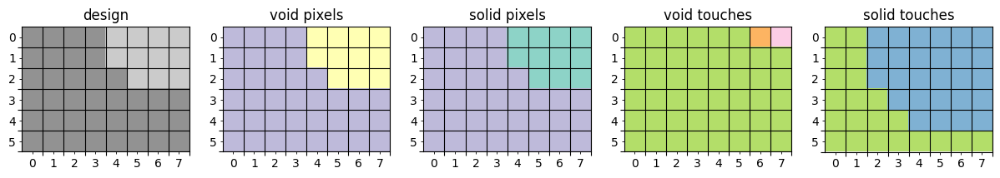
take_free_void_touches
take_free_void_touches (design, brush)
step3 = lambda: take_free_void_touches(step2(), my_brush)
step3()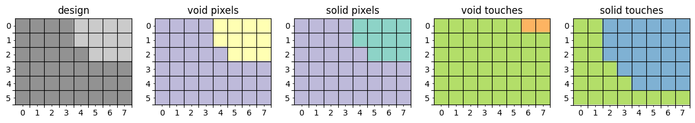
invert_design
invert_design (design)
invert_design(step3())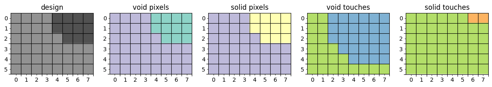
add_solid_touch
add_solid_touch (design, brush, pos)
take_free_solid_touches
take_free_solid_touches (design, brush)
step4 = lambda: add_solid_touch(step3(), my_brush, (0, 0))
step4()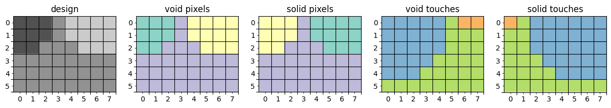
step5 = lambda: add_void_touch(step4(), my_brush, (4, 6))
step5()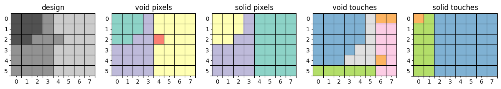
step6 = lambda: take_free_void_touches(step5(), my_brush)
step6()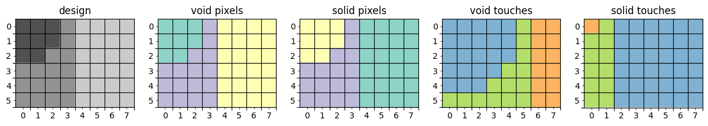
step7 = lambda: add_void_touch(step6(), my_brush, (4, 4))
step7()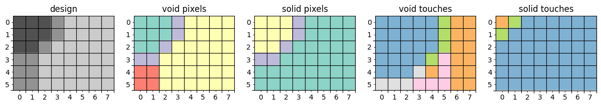
step8 = lambda: take_free_void_touches(step7(), my_brush)
step8()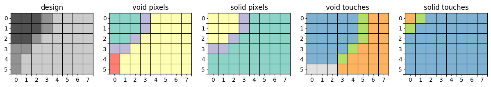
step9 = lambda: add_void_touch(step8(), my_brush, (5, 0))
step9()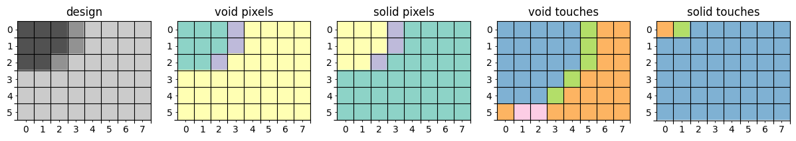
step10 = lambda: take_free_void_touches(step9(), my_brush)
step10()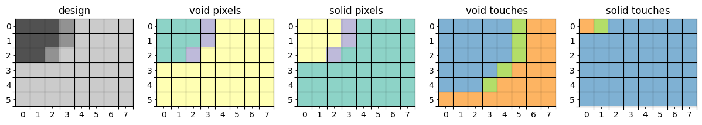
step11 = lambda: add_void_touch(step10(), my_brush, (2, 5))
step11()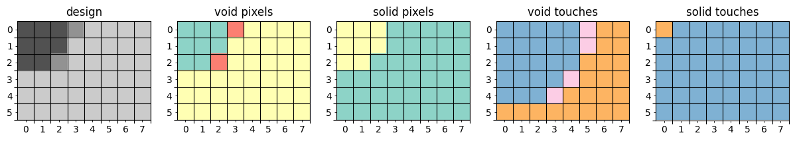
step12 = lambda: take_free_void_touches(step11(), my_brush)
step12()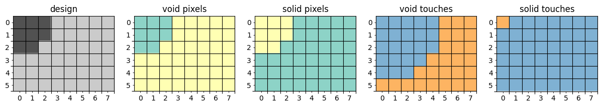